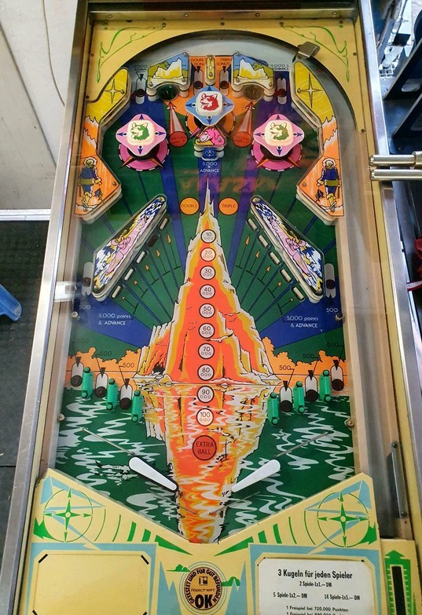

This game has 4 player EM, 1 player EM, and 4 player solid state versions. Differences between the EM and SS versions are mentioned throughout the guide as relevant.
Very little matters for scoring on Alaska other than building and multiplying the bonus. Bonus multipliers can only be earned by making one of the two center top lanes on the plunge: double bonus at the left lane of the middle pair, and triple bonus at the right lane of the middle pair. Build bonus by shooting drop targets. If base bonus is maxed out or if you didn't earn a multiplier on the plunge, shoot saucers for 50,000 points each.
The below picture of Alaska's playfield was taken from the Internet Pinball Database, where it was originally provided by Errol Klein.

The skill shot is the most important part of scoring on Alaska. There are four top lanes: a far left lane, a far right lane, and a middle pair. The far left and far right lanes score 5,000 points and a bonus advance. The left lane in the middle pair awards Double Bonus and lights the two outer pop bumpers to score 10,000 per pop instead of 100 for the rest of the ball. The right lane in the middle pair awards Triple Bonus and lights the center pop bumper to score 10,000 instead of 100 for the rest of the ball. The middle pair of lanes scores 0 direct points on the EM versions, and 30 points in the solid state version. The placement of the pop bumpers and general playfield design make it nearly impossible to score any top lanes after the initial plunge, so collecting a bonus multiplier on the skill shot every time is imperative.
Each drop target down scores 5,000 points and a bonus advance. On the EM versions, be mindful that if you hit two targets at once or hit one target and ricochet into another, the 5,000 and bonus advance will only be awarded once, since the game's score motor cannot do two things at once. On the solid state versions, this is not an issue, and all drop targets are always scored.
The saucers, located at the top of the game and accessed by shooting in between pop bumpers, score 50,000 points. Completing all 5 left drop targets lights the upper left saucer for Special, and completing all 5 right drop targets lights the upper right saucer for Special. As far as I am aware, Special can only award a free game, not an extra ball or points. Drop targets do not reset, even if both banks are completed.
The lanes that run behind the drop target banks score 500 points.
On the solid state game only, the rubber wall behind the drop targets scores 30 points.
Alaska has an open in/out lane, meaning a ball can roll up the flipper and into the out lane, or be saved from the out lane back toward the flipper with a well timed nudge off the small post that is situated in the far left and far right bottom lanes. There are 3 bottom lanes on each side, and all 6 of these bottom lanes score 500 points. The flipper gap is significantly wider than most other games of the era, and there is no center post (or any other kind of kickback, gate, or save feature).
Bonus is advanced by the far left and far right top lanes, the very dangerous top center standup target, and any drop target. Bonus multipliers are only earned at the middle pair of top lanes. The first bonus advance is never given for free, so it is possible to drain with 0 bonus. Bonus multipliers are also never given for free, even on the final ball of the game. Max bonus is 3x 100,000 = 300,000 points on the EM versions, and 3x 150,000 = 450,000 points on the solid state version. End of ball bonus overshadows all playfield scoring other than the 50,000 point top saucers, so you should never tilt unless there is no bonus and you are trying to save a house ball.
Reaching an operator-adjustable level of base bonus between 50,000 and 90,000 awards an instant extra ball.
This game, as with some other solid state games from this era of Spanish pinball, uses score displays with a lot of unlabeled dots, which mean the following: